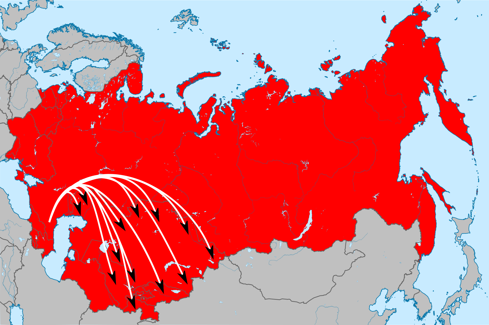
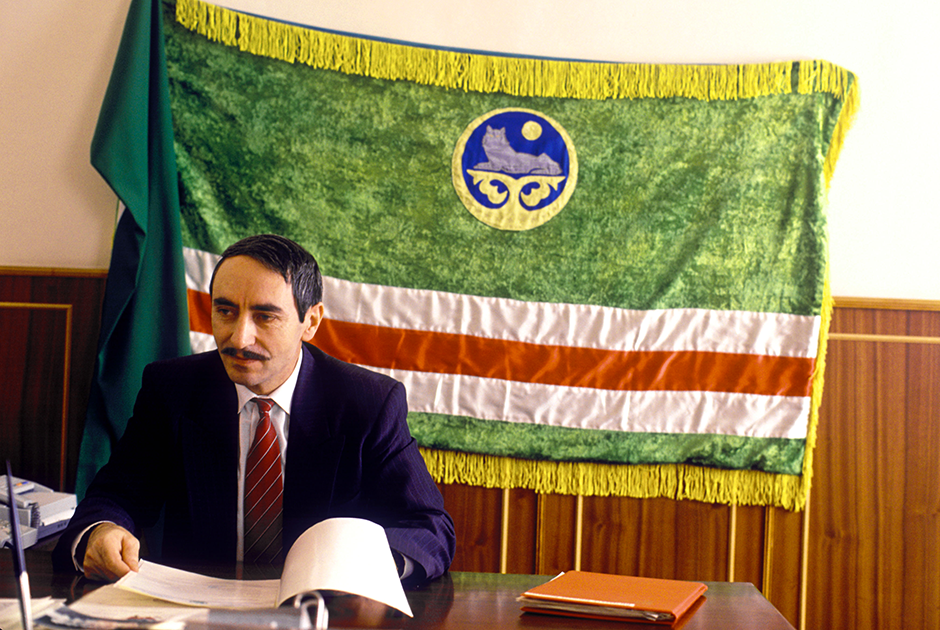

The History of the Chechen Republic of Ichkeria
The history of Ichkeria goes back far, and is full of depth and showcases the Chechen people's unique circumstances and their struggle for freedom.
Earliest recorded history
From the 7th century through the 16th century Chechens and Ingushes were mostly Christians and pagans but then the influence of Islam spread until Sufi Muslims became the majority. Later the conflicts intensified with their Christian neighbours such as Georgians and Cossacks, as well as with the Buddhist Kalmyks.
Chechen resistance to Russian conquest (17th/18th Century)
Russian influence started as early as the 16th century when Ivan the Terrible founded Tarki in 1559 where the first Cossack army was stationed.
In order to secure communications with Georgia and other regions of the Transcaucasia the Russian Empire began spreading her influence into the Caucasus mountains; It soon met with fierce resistance from the mountain tribes.
Russia launched its earliest expeditions against the Chechens and Kumyks under Ivan the Terrible in the 16th century. After the fortress at Terki was built in 1567 the first Russian colonies, such as Chervlonnaya, appeared on the left bank of the River Terek. However, Russia’s military campaigns, including those of 1604 and 1615, were repelled.
Empress Catherine II established a Caucasian Gouvernement for the Caucasus and Astrakhan in 1785. The governor was Prince Grigori Potemkin. The Chechens fought bitterly against Tsarist expeditions into their hinterland under Sheikh Mansur Ushurma. The campaigns led by Colonel De Pieri (1785) and Potemkin (1787) ended in Russian defeats. But the new commander in the Caucasus, General Tekkeli, managed to break the resistance in October 1787 with 12,000 men. Many villages were ravaged. Sheikh Mansur fled to the Turkish fortress of Sudzhuk-Kale (Novorossisk). In 1791 General Gudovich captured the Turkish fortress of Anapa. Sheikh Mansur was taken prisoner and died at the Schlusselburg Fortress in St Petersburg in 1794. Sheikh Mansur became a legend symbolising anti-colonial resistance.
Chechen resistance against Russian conquest continued into the 20th century from Tsarist Russia to the Soviet Union, the details of which are too numerous to get into, instead we will be skipping straight to the deportation of the Chechens and Ingush and the end of Soviet Times, for more information about Chechen resistance against Russian conquest, follow this link: Chechen Struggle against Russian Imperialism
Deportation of Chechens and Ingushs on 23 February 1944
Although many Chechens earned the highest honours in the war against Germany, 550,000 Chechens were deported in Eastern Kazakhstan and Siberia on 23 February 1944, accused of collaborating with Hitler’s Nazis. 60% of the Chechen population perished during this ordeal.
Locations of Chechen Deportations
The deportation of Ingush and Chechens was set for the 23 February 1944, Red Army Day. 100,000 soldiers and 19,000 officers were involved. Perfidiously they were garrisoned in all families and in every village under the pretence that they were carrying out a military exercise, and as guests they were treated to Chechen hospitality.
People were herded into unheated cattle trucks for a journey that lasted many weeks. The train stopped every 24 hours and the dead, who are sacred to the Chechens, were thrown down the embankment. In Eastern Kazakhstan and Siberia, they had to build their own shelters and find their own food, constantly watched by the local authorities, who monitored very move. Of the 550,000 Chechens who were deported, NKVD reports suggest that 260,000 perished.
After Khrushchev’s secret speech during the 20th Congress of the Communist Party of the Soviet Union in 1956, which identified some of Stalin’s crimes, the Chechens gradually returned home. In their suitcases they carried the bones of their dead. They re-erected the gravestones that had been used for building roads. Except that much more time passed before they were allowed back to the mountain villages. The unspeakable suffering caused by deportation prompted Chechens to close ranks. This led to a renewal of Islam, led especially by the Sufi Qaddiri order, and to the emergence of a common Chechen national identity.
Independence of Ichkeria
Dzhokhar Dudaev, First President of the Chechen Republic of Ichkeria
Under Gorbachev perestroika brought a thaw. In Chechnya, as in the Baltic countries and the South Caucasus, new parties and movements appeared, and in one objective they all concurred: liberation from colonial Russian rule. The most influential party at that time was the Green Movement of Chechnya, chaired by Dr Ramzan Goitemirov. In November 1990 and on 8 June 1991, at two Chechen National Congresses, more than 1,000 delegates elected in all regions decided that Chechnya should be independent. The Soviet air force general Dzhokhar Dudaev, who had refused to act against demonstrators in Estonia, was elected Speaker. On 1 September he dissolved the Supreme Soviet in Chechnya and had all strategically important nodes of power occupied by the National Guard. On 27 October 1991 Chechens elected a new parliament and a big majority elected Dudaev as their President. On 8 November 1991 Dudaev declared the sovereignty and independence of Chechnya. In 1992 Chechnya did not sign the Federation Treaty with Russia and was no longer part of Russia. In 1992 the first Chechen Constitution, drawn up with the help of Baltic lawyers, entered into force.